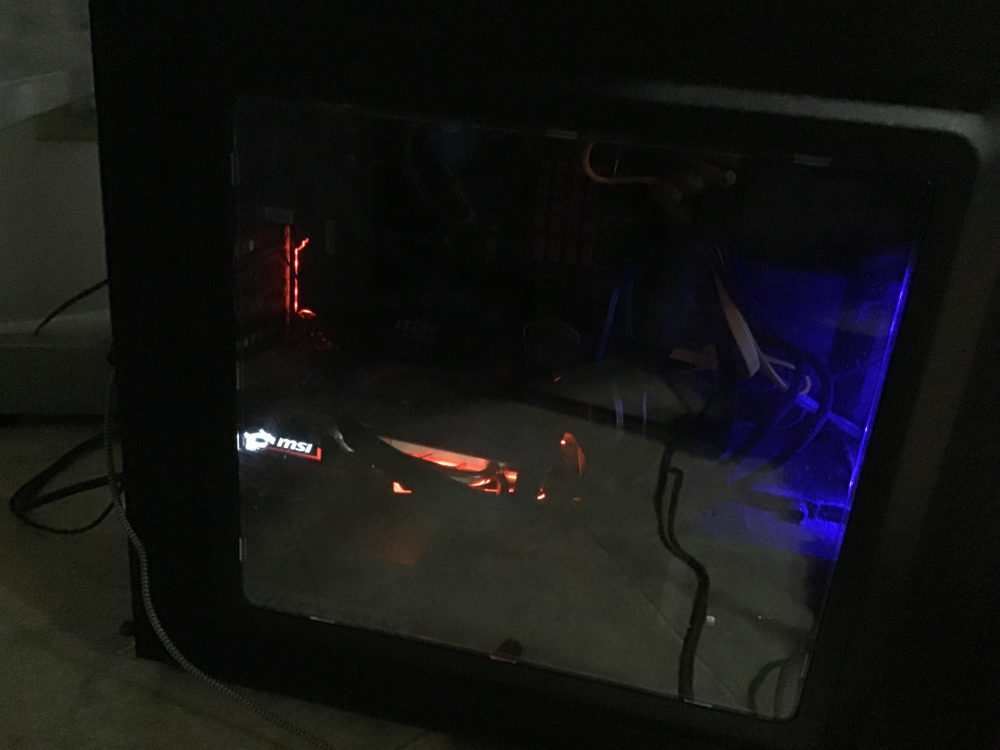

My hobbies mainly consist of playing games, so here is a quick list of some of my favorite games
Although i love games i also have interests in other things, one big thing is swimming.
Even though ive never been in an actual swim team, i always loved just to swim and be
present in the water. Swimming also helps with my asthma a lot so my mom used to always
take me to the pool and try teaching me how to swim. But when its not summer and i'm stuck
i always love to cook food with my mom. I also love learning about and working on PC's
I actually built two PC's along with my dad, Here are some pictures of my 2 pc's
This is my first pc that i built it is a little slow but gets the job done nonetheless
This is the main pc that i built and it is considered the "Main PC" because it works faster and is great for
playing games and is good for more demanding things.
i am currently enrolled in hoffman estates high school. But i originally went to Dooley elementary school
which is a japanese/english school and basically half the day u learn the regular curriculum and the other half you
learn japanese.And then after dooley i went to Jane Addams, which i also took japanese as one of my electives.
I am currently enrolled in 2 AP Classes and am also taking a language class. One of the AP Classes that i am
taking is AP World history, which i originally took just because my sister took it and i wanted to do AP
but as i got more involved in the subject it became pretty fun to learn about history. The other class that i am
taking is AP Computer science, i always loved computers and anything technical so i knew that i was going
to take this class and enjoy it, which i do. I am also planning on taking AP Java next year as well.
I am also taking a french class which also has been fun to take, although it is a little weird learning
a new language after taking japanese for 9 years.